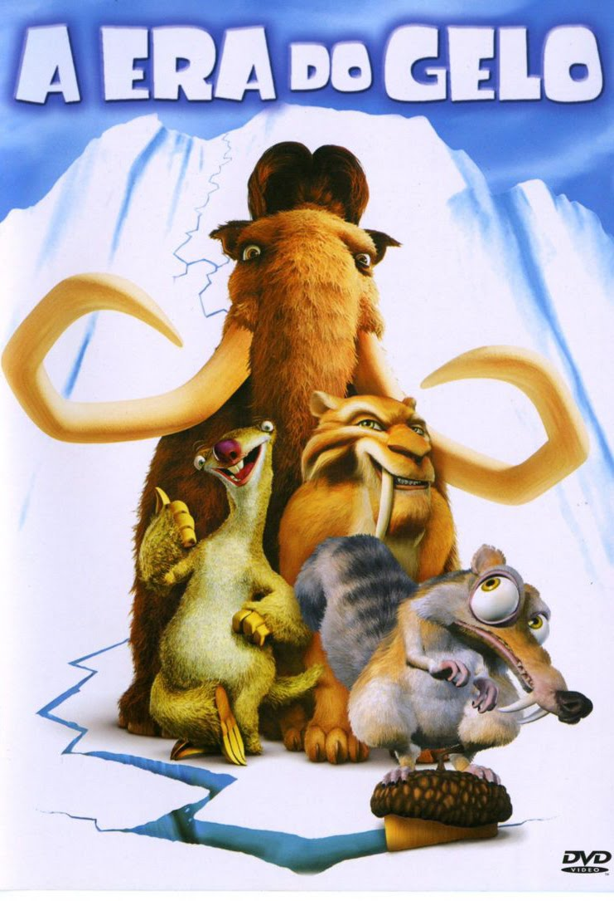

|
|
A Era do Gelo |
Início |
Personagens |
Informações Extras |
Temporadas |
Lista de TemporadasAtualmente, "A Era do Gelo" conta com um catálogo de seis filmes, incluindo um previsto para ser lançado esse ano, além de um curta-metragem de especial de natal. |
|  |
A Era do Gelo 1 (2002)O mamute Manny, o tigre de dente de sabre Diego e a preguiça-gigante Sid são amigos em uma época muito distante dos dias atuais e vivem suas vidas em meio a muito gelo. Até o dia em que eles encontram um menino esquimó totalmente sozinho, longe de seus pais, e decidem que precisam ajudá-lo a achar a sua família. Enquanto isso, o esquilo pré-histórico Scrat segue na sua saga para manter sua amada noz protegida de outros predadores. |
|
A Era do Gelo 2 (2006)A era glacial está chegando ao fim e como consequência surgem em todo lugar gêiseres e verdadeiros parques aquáticos. O mamute Manfred, o tigre Diego e o bicho-preguiça Sid logo descobrem que toneladas de gelo estão prestes a derreter, o que inundaria o vale em que vivem. Logo, o trio de amigos precisa correr para avisar a todos do perigo e ainda encontrar um local em que não corram riscos. |
|
|
A Era do Gelo 3 (2009)Manny e Ellie estão à espera de seu primeiro filho. Sid encontra alguns ovos de dinossauro, o que faz com que passe a ter sua própria família adotiva. Só que o roubo faz com que se meta em apuros, com a mãe tiranossauro vindo atrás de seus rebentos. Ela leva os três filhotes e ainda Sid para um mundo subterrâneo, onde os dinossauros ainda existem, o que obriga Manny, Ellie e Diego a irem em sua busca para resgatá-lo. |
|
|
A Era do Gelo 4 (2012)Sempre em busca de sua cobiçada noz, o esquilo Scrat provoca, sem querer, a separação dos continentes. A situação provoca mudanças no terreno de vários locais, entre eles onde os amigos Manny, Diego e Sid estão alojados. Um terremoto faz com que o trio fique preso em um iceberg, enquanto que Ellie e a pequena Amora permanecem no continente. Em alto mar, Manny promete que irá encontrá-las a qualquer custo, mas para tanto precisará enfrentar perigosos piratas e o canto das sereias. |
|
|
A Era do Gelo: O Big Bang (2016)Depois que o esquilo Scrat, involuntariamente, provoca um acidente espacial em sua incansável perseguição pela noz, um enorme meteoro entra em rota de colisão com a Terra, ameaçando o lar de Manny, Diego, Sid e cia. Sem saber o que fazer para reverter a situação, eles terão que confiar em Buck, a elétrica doninha caolha do terceiro filme – único do grupo que realmente tem um plano para evitar o trágico fim de todos. Paralelamente, Mannie e Ellie têm que lidar com iminente saída de Amora de casa, ao passo que Diego e Shira pensam em aumentar a família e Sid finalmente parece encontrar o amor. |
|
|
A Era do Gelo: As Aventuras de Buck Wild (2022)A Era do Gelo: As Aventuras de Buck Wild acompanha os irmãos gambás malucos Crash e Eddie enquanto eles retornam ao "Mundo Perdido" repleto de dinossauros, onde a doninha Buck mora. Desesperados por alguma distância de sua irmã mais velha Ellie, os irmãos gambás em busca de emoção partem para encontrar um lugar próprio, mas rapidamente se encontram presos no Mundo Perdido, uma enorme caverna subterrânea. Eles são resgatados por seu amigo caolho, a doninha caçadora de dinossauros Buck Wild, e juntos embarcam em uma missão para salvar o Mundo Perdido da dominação dos dinossauros. |
|
|
A Era do Gelo: Especial de Natal (Curta-Metragem, 2011)O mamute Manny acidentalmente destrói um monumento natalino e passa a acreditar que não está mais na lista de "bons meninos" do Papai Noel. Ele viaja até o Polo Norte com seus amigos para tentar esclarecer as coisas com o bom velhinho e o grupo acaba ficando com a responsabilidade de salvar o Natal. |